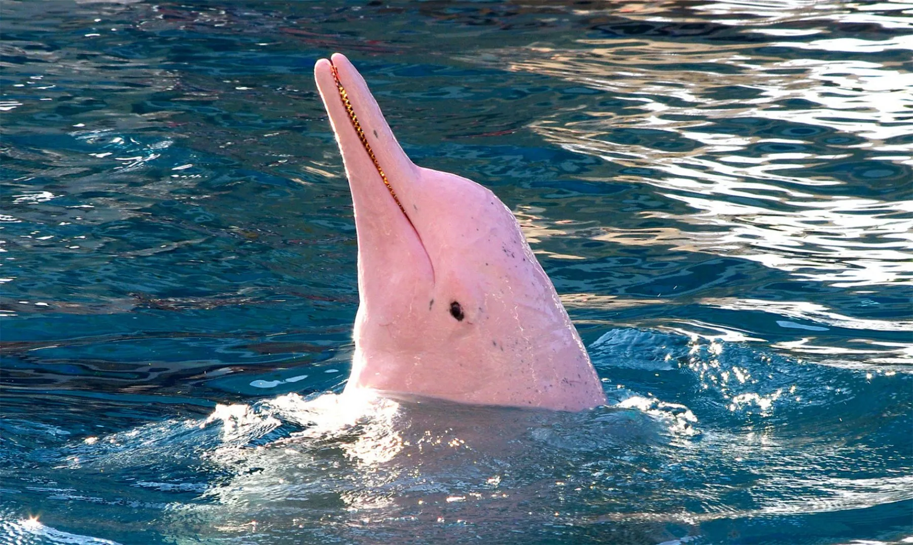

Página principal

Delfín Rosado (Inia geoffrensis)
Ubicación: Ríos de la Amazonía y Orinoquía, como el río Guainía.
Altura: a nivel del mar/río.
Estado de conservación: peligro crítico.
Info adicional